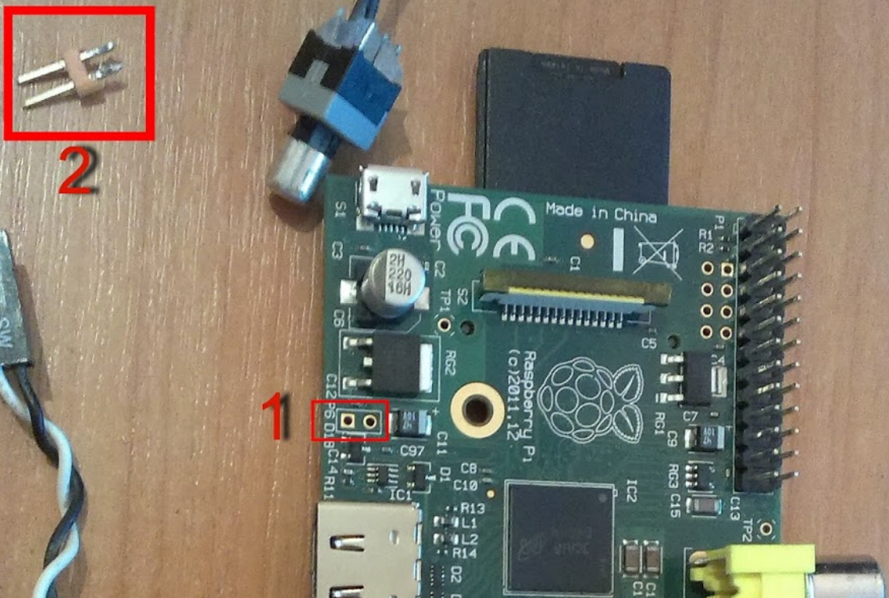
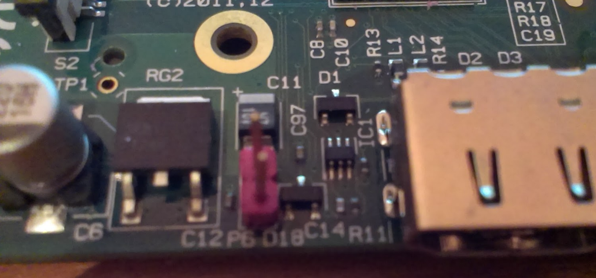

Чтобы сделать кнопку сброса (reset) нам понадобится:
1) Кусок провода (всё зависит от того в каком корпусе малина и куда будет выводиться кнопка)
2) 2 ножки (я выпаял со старой материнской платы)
3) Фишка Reset sw или другая подобная.
4) Паяльник и немного времени.
Начнем:

Вот что должно получиться:
